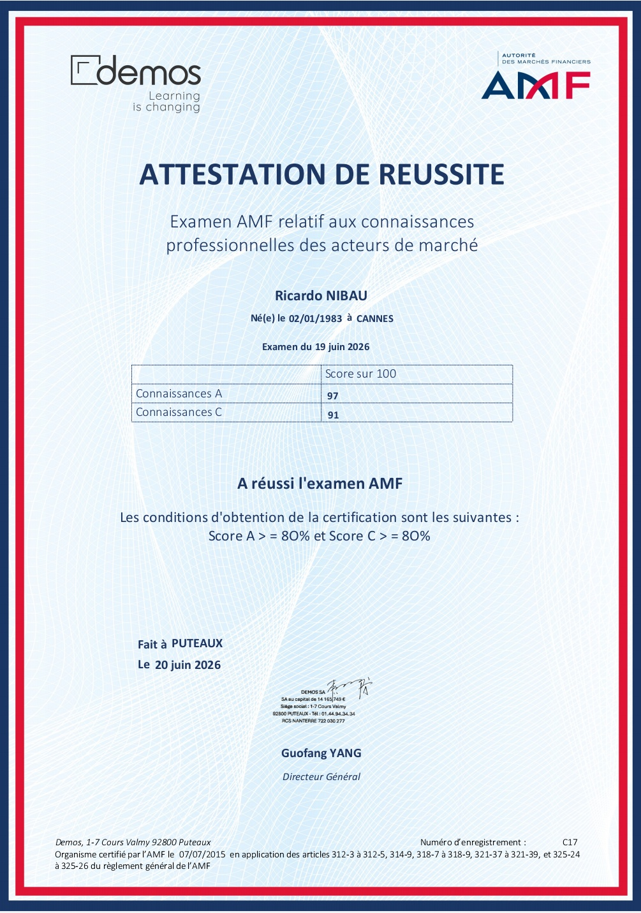

Contact & Accompagnement Personnalisé
Une expertise certifiée pour vous guider dans votre compréhension des marchés et de vos investissements.
À propos du fondateur
Fondateur d'EikoFinance, ma mission est de rendre la culture financière et économique accessible à tous grâce à des clés de lecture claires, concrètes et pédagogiques.
Pour toute question, demande de renseignements ou accompagnement personnalisé, vous pouvez me contacter directement par e-mail.
✉ Me contacter : contacteikofinance@gmail.comCertification Professionnelle AMF
Titulaire de la certification délivrée par l'Autorité des Marchés Financiers (AMF), gage d'une maîtrise rigoureuse des connaissances réglementaires, économiques et techniques liées aux marchés financiers.
- ✔ Examen certifié AMF (Connaissances professionnelles)
- ✔ Maîtrise des règles de protection des investisseurs
- ✔ Rigueur et éthique financière

Cliquez sur l'image pour agrandir l'attestation